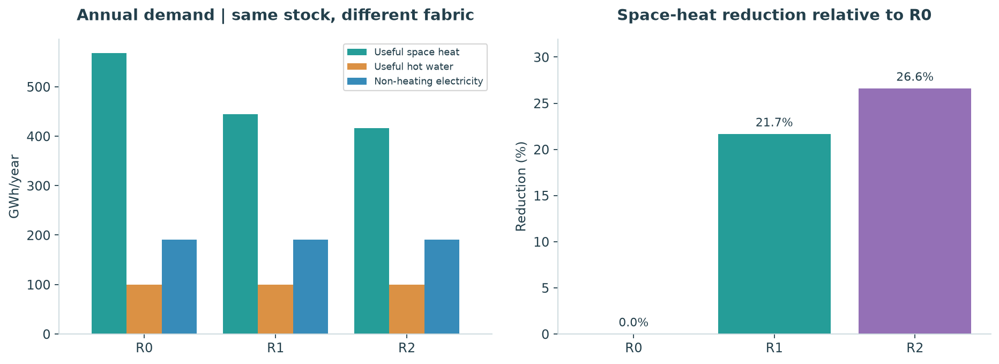
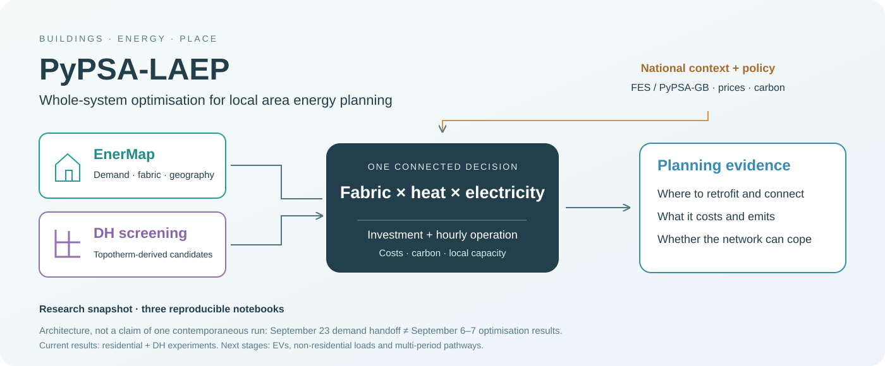
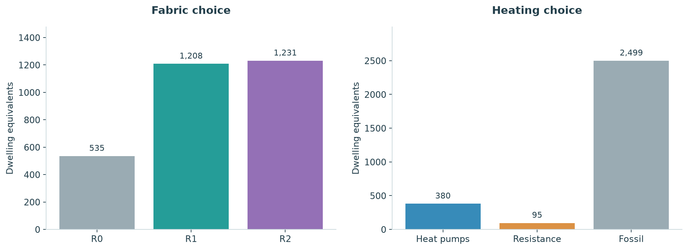
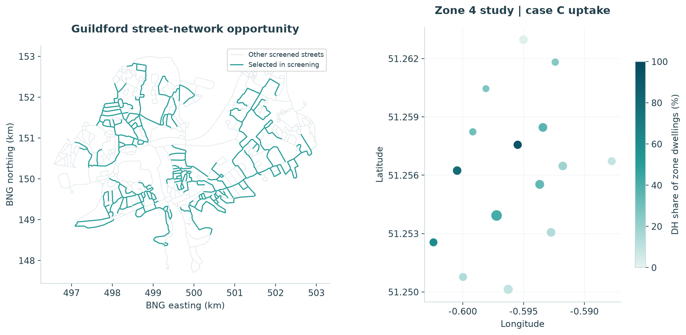

01 / DEMAND · 23 SEPTEMBER
From buildings
to energy demand
57,300 dwellings. Explore the current EnerMap export, retrofit alternatives, hourly demand, COP and accounting checks.
Read the handoff →Whole-system optimisation for local area energy planning. Three research notebooks explore the building demand, the residential investment decisions and the district-heating opportunity—with the evidence boundaries kept visible.


57,300 dwellings. Explore the current EnerMap export, retrofit alternatives, hourly demand, COP and accounting checks.
Read the handoff →
2,974 dwellings in 33 complete electrical zones. Follow the investment choices, costs and targeted hourly replay.
Explore the results →
One Stoughton candidate within 15 electricity zones. Compare costs, connections and central plant, including the unresolved replay check.
Open the DH study →